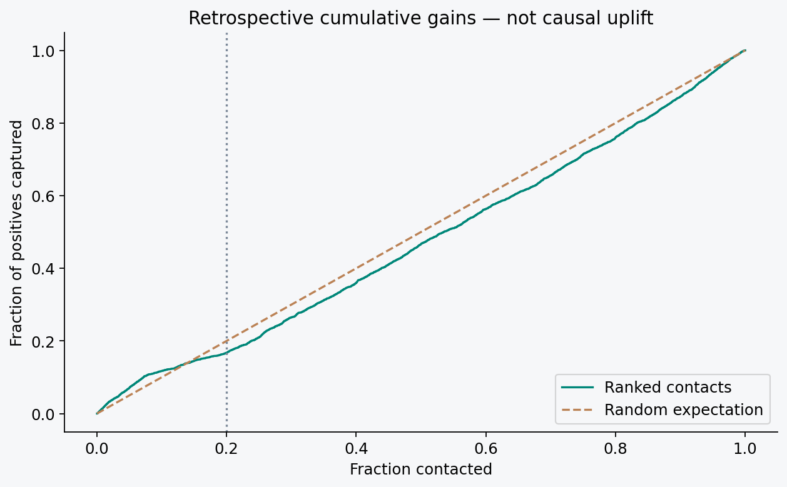
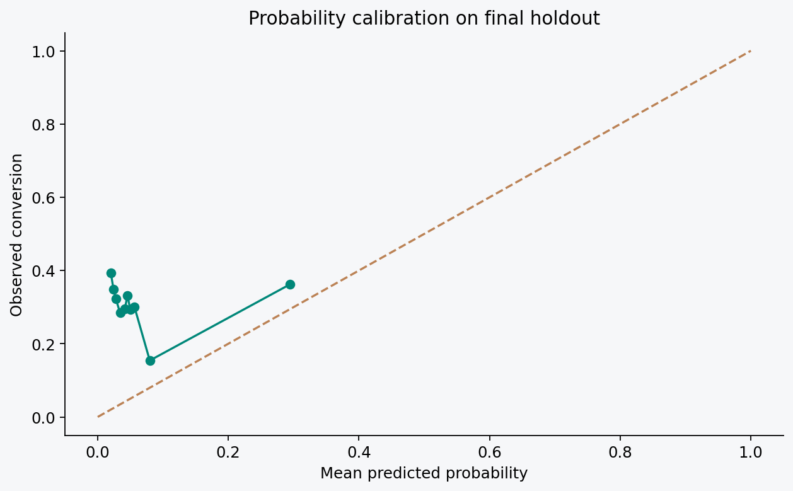

RESEARCH PROTOTYPE · NOT RECOMMENDED FOR PRODUCTION
A useful test also reveals when a model is not ready.
The ranking does not outperform random selection on the aggregate test. Small gains within periods are inconsistent, and probabilities underestimate conversion. The documented decision is to collect recent data and validate again before operating.
01 / CONTEXT
One queue. Limited capacity. A decision.
Rank planned bank calls by propensity to subscribe to a term deposit. Selecting 20% of contacts is an illustrative capacity assumption, fixed before testing. The model evaluates historical conversions; it does not estimate the causal effect of a call.
02 / METHOD
Time is part of the problem.
We use original UCI Bank Marketing row order, covering Portugal from 2008 to 2010. Each stage has a separate period. Call duration is excluded and preprocessing learns only from training data.
Development60%
Calibration10%
Policy10%
Final test20%
Six configurations, four expanding windows and a gap of 100 records. HistGradientBoosting was selected by mean average precision. Platt calibration was evaluated and rejected because it reversed the ranking; the final model uses original scores. The correction after the initial run is documented, without further test-set parameter search.
03 / EVIDENCE
The ranking did not pass the future test.
On 8,238 test records, 1,648 selected contacts capture 425 of 2,540 historical conversions. Random selection would capture about 508 on average. Aggregate lift of 0.84× shows that ranking did not transfer to this period.

Four consecutive test blocks
| Block | Observed conversion | Lift @ 20% |
|---|---|---|
| 1 | 7.96% | 1.19× |
| 2 | 23.50% | 1.05× |
| 3 | 39.78% | 1.05× |
| 4 | 52.11% | 0.95× |
Lift falls below 1 in one of four blocks; other blocks show small gains. The difference from the aggregate reinforces the need to evaluate contemporaneous batches and temporal stability.
Probabilities did not keep pace with the shift.
Observed conversion rose from 4.81% in development to 30.83% in the test. Mean predicted probability stayed at 6.73%. ROC AUC 0.4616 and Brier 0.2752 reinforce the limitation. Calibration reversed the ranking and was rejected; final probabilities are uncalibrated.

04 / CAPACITY
Explore contact capacity.
Change capacity and assumptions to inspect historical rankings. Financial values are hypothetical monetary units.
Selected contacts
Captured conversions
Hypothetical ranking net value
Expected random net value
Descriptive simulation on the already observed test. Not realized ROI, causal uplift or a promise of future performance. Original experiment budget: 20%.
05 / DECISION
What would real campaign use require?
- Recent data with customer IDs and feature availability timestamps.
- Consistent gains over simple rules in future operational batches.
- Calibrated probabilities on new periods and segment analysis.
- A controlled experiment to measure incremental conversions and real costs.
The complete study is open.
Reproducible code, CRISP-DM notebook, trained model, Streamlit application, batch scoring, automated tests, model card and auditable results.
Open GitHub repository ↗